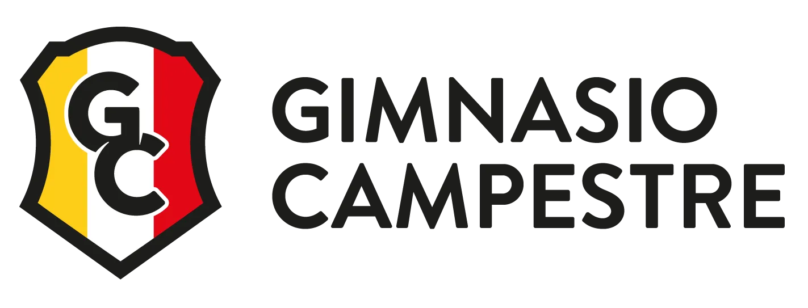
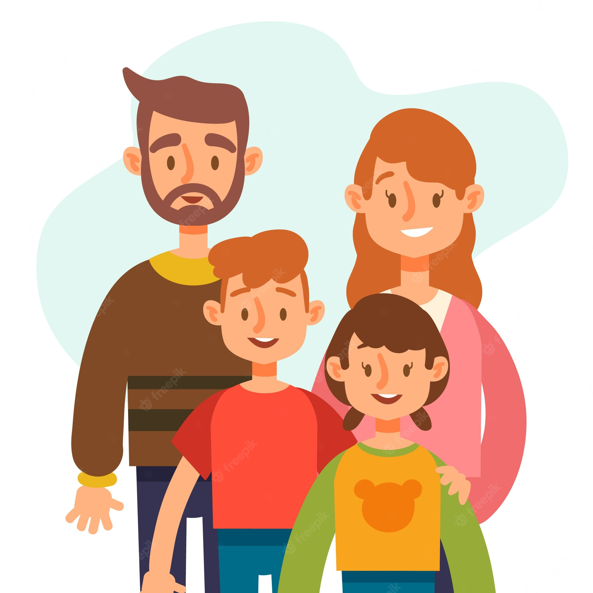

Colegio
Estudie en el Gimnasio Campestre desde los 4 años y me gradue en 2021. Era el arquero titular del equipo y era de la Orden de San Jorge.

Pasatiempos
Soy una persona muy deportista, me encantan los videojuegos y leer. Tambien dibujo aveces y toque la guitarra. ¡Amo la musica! me la paso con audifinos de arriba para abajo me cuesta mucho estar un dia sin musica y aun mas haciendo trabajos.
Viajes
Unos de mis cosas favoritas es viajar en especial duera del pais y conocer nuevas personas, culturas y comidas. A lo largo de los años e podido viajar a diferentes paises los cual aun al dia de hoy estan presentes en mi memoria.
Lugares que e viajado:
- Mexico
- Estados Unidos
- Argentina
- Chile
- España
Pero mi viaje favorito y el que mas recuerdo fue cuando fui a jugar un torneo en españa durantes 10 dias solo con el equipo de futbol. El cual creo que me ayuda a crecer como persona y fumentar habilidades y creencias que aun al dia de hoy estan presentes en mi vida
Universidad
Actuamete, estoy como mencione antes estudiando en la Universidad de la Sabana Igenieria Informatica y estoy en mi tercer semestre. La vida universitaria, no me a parecido tan pesada como mucho me habian avisado. Lo mas probable es que lo sea, no obstante, al ser tan independiente desde pequeño y venir de un colegio tan exigente como lo fue el mio. Aprendi ya fuera para lo bueno o lo malo dependiendo desde donde lo obesrve; a altas cargas de trabajos, timepos limites y manejo de grupos y personas. Hago parte del gurpo de inducciones, donde me volvere uno de los lideres que le daran la bienvenida a los futuros estudiantes de Informatica en la Univesidad. A su vez, soy el secretario genral de la rama IEEE de la facultad.
Vida
Diferente de la Universidad, e conocido gente increible dentro de la misma dentro y fuera de mi carrera. Con los cuales el ultimo año e parchado y conocido a fondo, yendo a fiestas, jugando o haciendo palnes. A su vez, con mi Novia que conoci en la universiad, mi familia y mis amigos del Colegio. Dada la pandemia deje de practicar football "Seriamente" y solo juego de vez en cuando. No obstante, para no dejar de hacer ejercisio estoy yendo al gimnasio. Desde que entre a la universidad solo e viajado a Cali a visitar a mi familia en especial a mi abuela.
Laboral
Como objetivo Laboral me gustaria trabajar en Cyberseguridad o Analis de datos. Ya sea en ek pais o por fuera. Tambien, esta la posibilidad de trabajar con mi padre y ayudarlo en su trabajo y al tomar mas experiencia si buscar otras posibilidades.

Vida
Uno de mis sueños simpre a sido formar una familia tener una esposa y hijos y brindarles todas las posibilidades que me han brindado mis padres. Pero pensar en eso en este momento es un poco temprano. En este momento quiero graduarme, comenzar a trabjar y tener mi propio apartamento/Casa. Al igual, que darme los gustos que quiera y lograr viajar a los paises que siempre e querido viajar; enrtre ellos Japon.

Objetivos
- Graduarme de la Universidad
- Comenzar a trabajar
- Retomar el Football
- Ayudar a mi familia
- Viajar